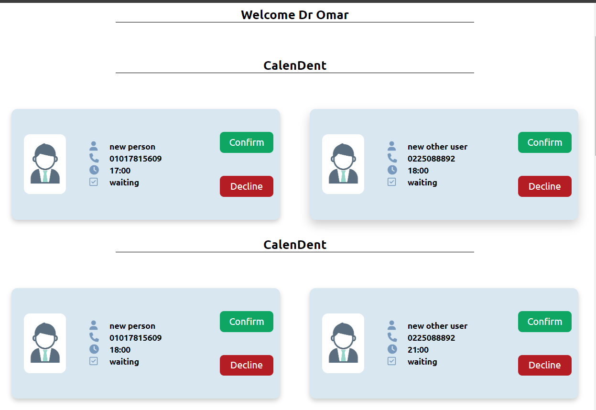

CalenDent
What is CalenDent ?
CalenDent is a comprehensive web application designed to streamline the reservation process for dental clinics. Whether you're a patient looking to book an appointment or a dental clinic aiming to manage your schedule efficiently, CalenDent offers a user-friendly solution that simplifies dental care appointments.

Easy to Use
Just 3 simple steps:
1.Choose Your City
2.Choose Your Neighborhood
3.Ht Search
(optional) You Can Search with Doctor name to find his Clinic
Book Your reservation
Doctor Card
from here you can book a visit for Doctor You will found
1. Name of Clinic
2. Doctor's name
3. Avaliable time of the Clinic
4. Visit Price
Control Your Reservation
You can see all your reservation from "Your Reservations" Tab
For Doctor, Take full control on reservation
Simple and Elegant Dashboard For Doctor for Control over Appointment
Who Am I ?
I am a dedicated dentist with a passion for software engineering.
Combining my expertise in dentistry with my love for technology,
I created CalenDent to serve fellow dentists and improve the dental appointment experience for patients.
My goal is to make dental clinic management more efficient and accessible through innovative solutions.